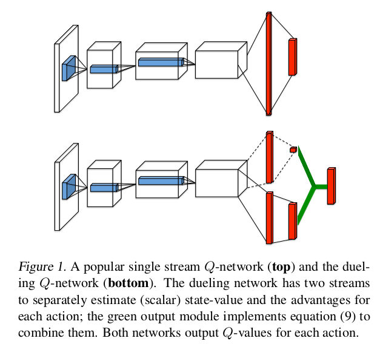
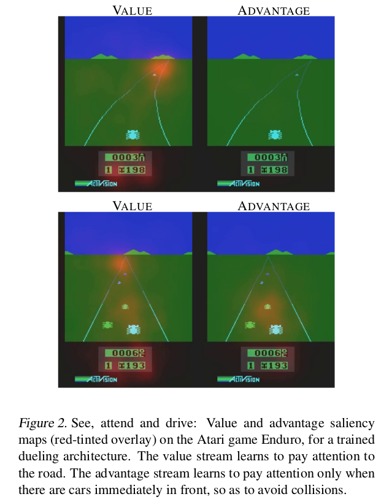
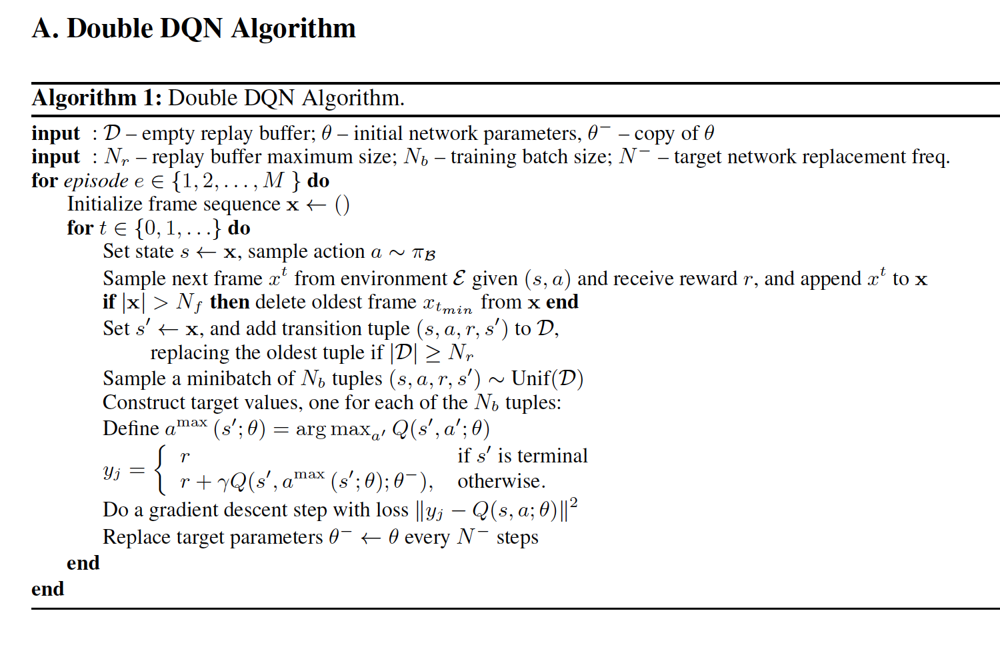

RL Reading Note: Dueling Network Architectures for Deep Reinforcement Learning
1. Motivation
For many states, it is unnecessary to estimate the value of each action choice, while for bootstrapping based algorithms, the estimation of state values is of great importance for every state.
2. Traditional neural networks
- Convolutional networks
- MLPs
- LSTMs
- Auto-Encoders
3. Network StructureL Double DQN (DDQN)

- Structure
- Two streams are combined via a special aggregating layer to produce an estimate fo the state-action value function Q: replace the traditional single-stream Q network in DQN with two streams
- The lower layers stay the same as DQN while instead use two sequences of fully connected layers
- Output: same as DQN, a set of Q values, one for each action
- Properties
- Produce separate estimates of state value function and advantage function
- The dueling architecture can learn which states are (or are not) valuable , without having to learn the effect of each action for each state
- Dueling architecture can more quickly identify the correct action during policy evaluation as redundant or similar actions are added to the learning problems
- Use prioritized experience replay to increase the replay probabiliy of experience tuples that have a high expected learning progress (measured via TD-error)
4. Update Rules
- Advantage function:
- Intuitively, the ad vantage function subtracts the value of the state from the Q function to obtain a relative measure of the importance of each action.
- Update DDQN: with
- Combine Advantage function and alue funtion as well as address the Issue of identifiability (force the advantage function estimator to have zero advantage at chosen action):
5. Understand dueling network architecture

- Dueling architecture is particularly useful in states where its actions do not affect the environment in any (or much) relevant way : figure 2 (top) shows that the value network strea pays attention to the road and the score while the advantage stream does not pay much attention to the visual input because its action choice is practically irrelevant when there are no cars in front.
- Use average operator instead of max in formula (9) stabilize the optimization, even though it becomes off-target by a constant, but the advantages now only need to change as fast as the mean instead of having to compensate any change to the optimal action in (8).
- The advantage of the dueling architecture lies partly in its ability to learn the state-value function efficiently. With every update of the Q-values, the value stream V is updated (while in DQN, only a specific Q value is updated everytime).
6. Comparison to DQN
- DQN uses single-stream Q network
- DQN takes the state representation as a single input, and generates the weights of different action as output.
- In Q-learning and DQN, the ma operator uses the same values to both select and evaluate an action, which can lead to overoptimistic value estimates
- DDQN has more frequent updates on state values, thus allows for better approximation of state values.
- In DQN, in some states, the average action is roughly 0.4, whereas the average state value across those states is about 15. This difference in scales can lead to small amounts of noise in the updates can lead to great reorderings of the actions. DDQN is more robust in this case.
7. Inplementations and Experiments
- Corridor Environment
- Behavior policy: $\epsilon$ - greedy with $\epsilon$ = 0.001
- Three layers: first hidden layer of 50 units, two layer MLP with 25 hidden units
- When we increase the number of actions, DDQN works better
- The stream $V(s; \theta, \beta)$ learns a general value that is shared across many similar actions at s, hence leading to faster convergence.
- Atari Game
- Same low-level convolutional structure as DQN: 3 convolutional layers followed by 2 fully-connected layer.
- Three convolutional layers: first convolutional layer: 32 $8 \times 8$ filters with stride 4; second: 64 $4 \times 4$ filters with stride 2; third: 64 $3 \times 3$ filters with stride 1.
- Value and advantage streams both have a fully connected layer with 512 units.
- Combine value and advantage streams using equation (9).
- Slightly lower the learning rate since it can deteriorate the performance.
- Rescale the combined gradient entering the last convolutional layer by $1 / \sqrt 2$ , which increases stability.
- Clip the gradients to have their norm less than or equal to 10.
- Single Clip as comparison (isolate the contributions of the dueling architecture.
- Random starting position.
- Evaluation: improvement in percentage in score over the better of human and baseline agent scores
- Human Starts Evaluation: prevent the agent from simply remebering a sequence of actions
- To avoid adverse interactions , use $6.25 * 10^{-5}$ for the learning rate and 10 for the gradient clipping norm.
8. Algorithm
